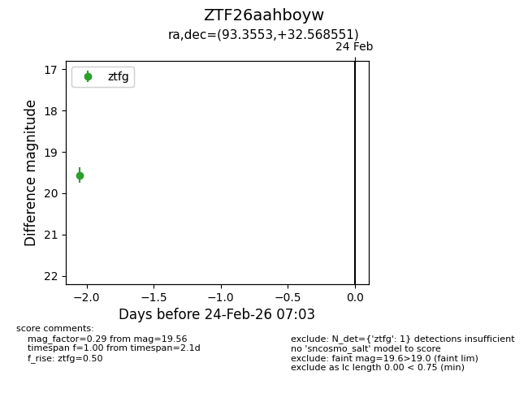
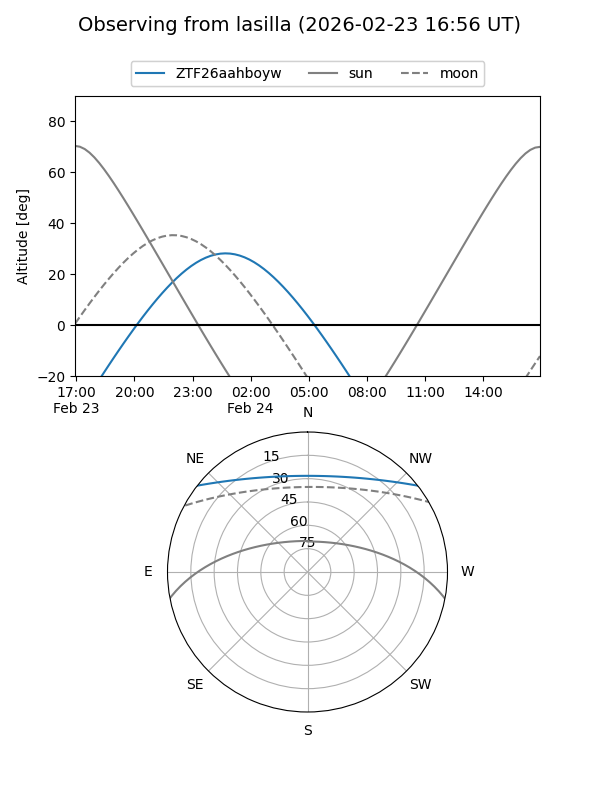
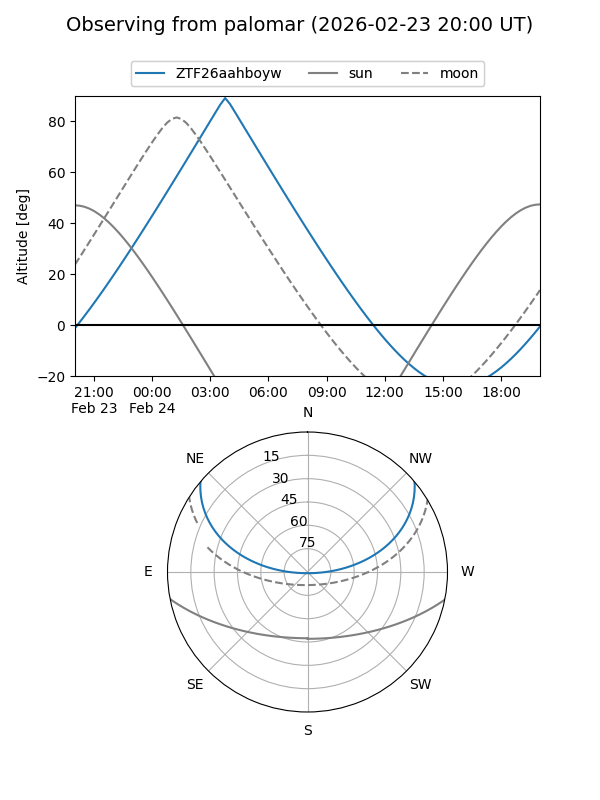

ZTF26aahboyw
Target ZTF26aahboyw at 2026-02-24 09:08
Aliases and brokers:
FINK: link
Lasair: link
ALeRCE: link
alt names
ZTF26aahboyw (ztf,fink_ztf)
Coordinates:
equatorial (ra, dec) = 93.3553,+32.56855
equatorial (HMS+DMS) = 06:13:25.27,+32:34:06.78
galactic (l, b) = (179.7981,+6.98529)
Flags:
Photometry:
last ztfg=19.56
1 ztfg detections
Lightcurve

Visibility


Additional plots